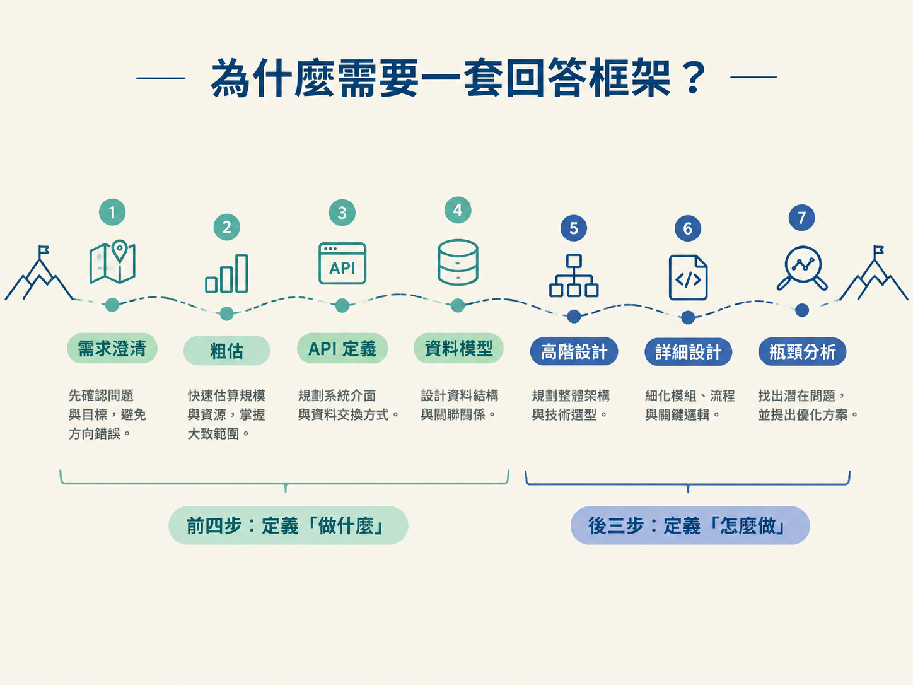
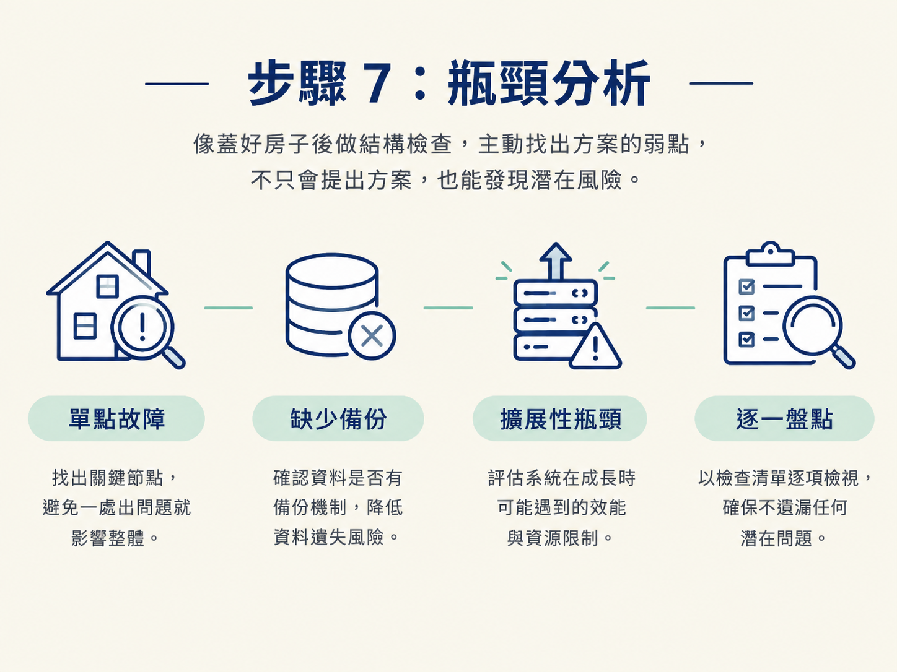
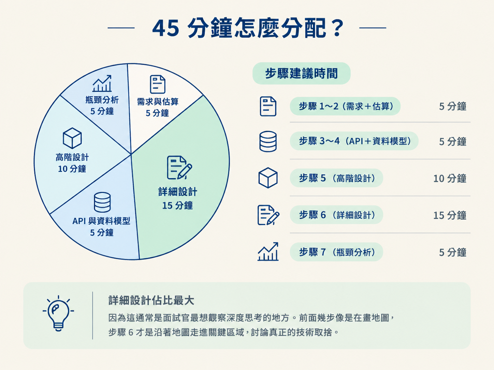
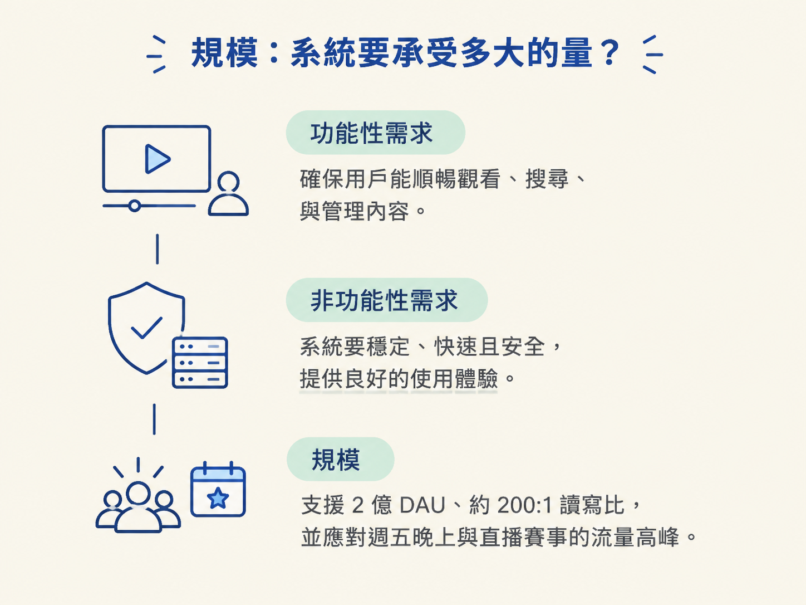

掌握系統設計面試的 7 步驟回答流程：需求澄清 → 估算 → API 定義 → 資料模型 → 高階設計 → 詳細設計 → 瓶頸分析。更重要的是，理解每一步為什麼存在、要回答什麼問題，以及在 45 分鐘內如何分配時間。
系統設計面試看似開放，卻不是想到哪裡就講到哪裡。沒有流程時，很容易一開始就鑽進資料庫或快取的細節，講了半天卻還沒確認「到底要解決什麼問題」。
一套可重複使用的框架，就像登山時的路線圖：不會替你走完每一步，但能避免你在山裡繞圈。這套 7 步驟流程會帶你從需求澄清一路走到瓶頸分析，讓面試官清楚看見你的思考路徑。
可以先記住一條主線：前四步定義「做什麼」，後三步定義「怎麼做」。

拿到題目後，不要急著畫架構圖，先問問題：核心功能是什麼？規模有多大？要支援哪些裝置？
因為需求會直接決定設計。例如，小型內部工具和服務數億使用者的平台，不可能採用完全相同的架構。澄清問題的過程本身，也是在展示你是否有實際設計系統的經驗。
花 2～3 分鐘估算日活躍使用者、峰值 QPS、資料量和讀寫比。這些數字不需要精準到小數點，重點是提供方向，幫助你做後續決策。
例如，讀取量遠高於寫入量時，你可能會優先考慮快取；資料量持續快速成長時，則要提早思考分片或儲存擴展。
接著定義系統對外提供哪些 API，並說明每個 API 的輸入、輸出，以及協議選擇。API 就像系統和外界之間的櫃檯：外部使用者不需要知道後台怎麼運作，但必須知道要交什麼資料、會拿回什麼結果。
最後決定資料要怎麼組織：使用 SQL 還是 NoSQL？核心實體有哪些？索引要怎麼建立？
這一步會把前面討論的功能，轉成可以實際儲存和查詢的資料結構。資料模型若沒先想清楚，後面的 API 和服務拆分往往會像蓋在沙地上的房子。
先畫出由 5～6 個方塊組成的架構圖，建立整個系統的骨架。這時不要急著鑽進任何一個方塊的內部，先說明各組件負責什麼，以及資料大致如何流動。
接下來，面試官通常會指定 2～3 個組件深入討論。例如，他可能要求你說明推薦服務如何運作，或追問影片播放服務如何處理高流量。
每深入一層，都要說明取捨：為什麼選這個方案？它解決了什麼問題？代價又是什麼？系統設計不是找唯一正解，而是讓人看見你如何在不同限制之間做選擇。
最後回頭檢查系統：有沒有單點故障？資料是否備份？哪裡可能成為擴展性瓶頸？
這一步很容易被忽略，卻是面試官很重視的環節。它就像蓋完房子後做結構檢查，展示你不只會提出方案，也能主動找出方案的弱點。

| 步驟 | 建議時間 |
|---|---|
| 步驟 1～2（需求＋估算） | 5 分鐘 |
| 步驟 3～4（API＋資料模型） | 5 分鐘 |
| 步驟 5（高階設計） | 10 分鐘 |
| 步驟 6（詳細設計） | 15 分鐘 |
| 步驟 7（瓶頸分析） | 5 分鐘 |
詳細設計分到最多的 15 分鐘，因為這通常是面試官最想觀察深度思考的地方。前面幾步像是在畫地圖，步驟 6 才是沿著地圖走進關鍵區域，討論真正的技術取捨。

如果題目是「設計 Netflix」，第一步不是立刻畫出影片服務、推薦服務和資料庫，而是先釐清需求。可以從三個層次提問。
先確認核心功能：播放影片、搜尋、推薦、下載離線觀看，哪些需要支援？還要確認裝置範圍：手機、平板、電視、瀏覽器和遊戲機是否都要支援？
接著確認優先順序。例如，可用性是否要達到 99.99%？是否可以讓推薦結果延遲，因此把可用性放在一致性之前？影片是否必須在 2 秒內開始播放？使用者登入和付費驗證是否是必要條件？
DAU 是 2 億還是 2000 萬，會讓架構設計產生很大差異。還要估算讀寫比，例如約 200:1，因為觀看影片的人遠多於上傳影片的人。最後確認流量高峰是在週五晚上，還是像世足賽直播這類特殊事件期間。

問完 3～4 個最關鍵的問題後，可以主動收斂範圍：「我先假設 X、Y、Z，如果不符合題目，再調整設計。」好的需求澄清不是問題問得越多越好，而是用最少的問題，消除最多的不確定性。這正是面試官想看到的能力。
七步驟順序：需 A 資，高詳瓶。可以用諧音「需要 A 紙，高級詳評」來記：想像一個人拿著 A 紙走進高級廁所做詳細評估，蹲太久之後終於遇到瓶頸。畫面越荒謬，反而越容易記住。
前四步用「需、A、資」代表需求、API、資料模型，負責定義「做什麼」；後三步用「高、詳、瓶」代表高階設計、詳細設計、瓶頸分析，負責定義「怎麼做」。粗估則放在需求之後，幫助你用數字校準後續設計。
回想你之前做過的任何專案：先找出當時的需求，再想想自己是否估算過流量、定義過 API、設計過資料表，最後又是怎麼處理效能或故障問題。
這樣練習的目的，是把「七步驟」從背誦口訣變成自己的工作流程。面試時，你就能自然地說明：當時為什麼選這個方案、遇到什麼限制，以及如果規模變大，下一步會怎麼調整。